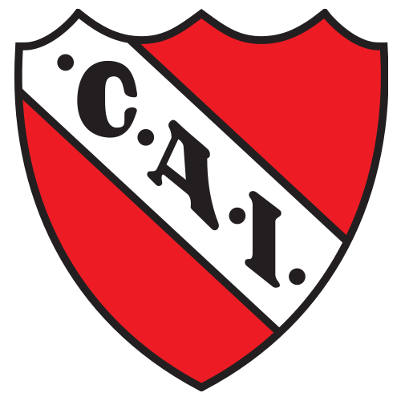

TP 03-uso de listas
Joaquin Fernandez
1.1- ¿Para qué sirve la etiqueta ul? Dar un ejemplo en donde lo utilizarías.
el elemento ul crea una lista no ordenanda o lista desordenada
un ejemplo es:
1.2- ¿Para qué sirve la etiqueta ol? Dar un ejemplo en donde lo utilizarías.
la etiqueta ol crea una lista ordenada por numeros de menor a mayor
un ejemplo es una lista de participantes en una competencia:
- Juan
- Martin
- Pedro
1.3- ¿Para qué sirve la etiqueta dl? Dar un ejemplo en donde lo utilizarías.
El elemento dl encierra una lista descriptiva con grupos de términos y
descripciones, usadas como un glosario o para desplegar metadatos.
Un ejemplo
1.4- ¿Para qué sirve la etiqueta li? Dar un ejemplo en donde lo utilizarías.
la etiqueta li sirve declarar cada uno de los elementos de una lista.
un ejemplo seria: usarlo dentro de la etiqueta ol para crear una lista ordenada
1.5- Crea una lista desordenada con tres elementos (li) que contengan nombres de países
de América del Sur.
- Argentina
- Brasil
- Colombia
1.6- Crea una lista ordenada con cinco elementos (li) que contengan los días de la semana
en orden alfabético
- Domingo
- Jueves
- Lunes
- Martes
- miercoles
- Sabado
- Viernes
1.7- Anida una lista desordenada dentro de otro elemento li de otra lista desordenada para
crear una lista anidada de frutas y verduras.
1.8- Crea una lista ordenada, respetando las negritas y el subrayado, que contenga los
siguientes pasos para hacer una tarta de manzana
- Pelar y cortar las manzanas en rodajas finas.
- Mezclar la canela, el azúcar y la harina
en un tazón
- Colocar la masa de la en un molde para horno.
- Colocar las manzanas sobre la masa de la tarta.
- Hornear la tarta durante 45 minutos.
1.9- Existe un atributo que se aplica a la etiqueta ol para ver la lista en orden descendente en vez de
ascendente,
¿cuál es ese atributo? Utilizar la referencia de atributos de HTML
https://developer.mozilla.org/es/docs/Web/HTML/Attributes
el atributo es "reversed"
1.10- Utilizando el atributo anterior, crear una lista con cuatro elementos que contengan nombres de
películas de terror de forma descendente.
- IT(eso)
- Cuando acecha la maldad
- SAW I
- Jeepers Creepers
1.11 Elegir un gusto particular y realizar una lista descriptiva de por lo menos 5 elementos.
El título debe tener un enlace que lleve a un sitio de referencia. Utilizar en las descripciones
etiquetas: strong, em, img.
- Boca Juniors
El Club Atlético Boca Juniors es una institución argentina que posee su sede en el barrio de La
Boca, Buenos Aires. Fue fundado el 3 de abril de 1905 y desde el año 1913 participa ininterrumpidamente
de la
Primera División del fútbol argentino. Tiene como clasico rivar a el club CHICO
riBer plate y no solo como rival si no que tambien es su hijo.
A lo largo de los años ah ganado 7 copas libertadores, 3 intercontinentales (copas del mundo)
dos sudamericanas, cuatro recopas sudamericanas y una supercopa. - riBer
Identificado por sus colores blanco, rojo y en menor escala negro, River Plate es uno de los clubes más
exitosos del continente con un total de 72 títulos en su palmarés. Es el club más ganador de la Primera
División de Argentina, con 38 campeonatos conseguidos. Aunque es mas conocido y se cree grande por ganarle
una final a su papá (Boca Junior el mas grande de america).
El descenso de Club Atlético River Plate a la Primera B Nacional fue un acontecimiento deportivo ocurrido el
día domingo 26 de junio de 2011 en el antes llamado Estadio Monumental de Buenos Aires (Argentina). El
equipo
"millonario" perdió la categoría luego de la derrota 1-3 (0-2 de ida y 1-1 de vuelta; marcador global 1-3)
en la serie por la promoción frente a Belgrano. durante el partido los "hinchas" del club riBer plate
entraron a la cancha
a pegarle a los jugadores y tambien quemaron la cancha - Racing (raSIN titulos)
-
Racing Club es un club de fútbol argentino, de la ciudad de Avellaneda de la Provincia de Buenos Aires.
Es considerado como uno de los equipos más importantes del fútbol en ese país. Fue fundado el 25 de
Marzo de 1903 y juega en la Primera división Argentina
- Independiente
- 
El Club Atlético Independiente, o simplemente Independiente, es una entidad deportiva y educativa argentina,
cuya sede y estadio están localizados en la ciudad de Avellaneda, del aglomerado del Gran Buenos Aires.
El club es reconocido principalmente por su fútbol profesional, que milita en la Primera División de
Argentina y es considerado como uno de los cinco grandes del fútbol argentino.
- Talleres
El Club Atlético Talleres es una institución deportiva con sede en la ciudad de Córdoba, Argentina.
Sus principales actividades son el fútbol masculino y femenino, aunque también se practican el
hockey, vóley, balonmano, patín artístico, karate, futsal y básquet en la institución. Fue fundado
el 12 de octubre de 1913 y participa en la Primera División de Argentina con su división masculina
y en la Primera División B con su división femenina.